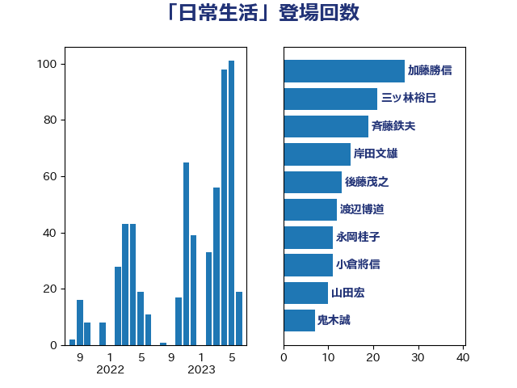

単語「日常生活」

| 田村憲久 | 自由民主党 | 14 回 |
| 岸田文雄 | 自由民主党 | 11 回 |
| 後藤茂之 | 自由民主党 | 11 回 |
| 菅義偉 | 自由民主党 | 9 回 |
| 斉藤鉄夫 | 公明党 | 8 回 |
| 井上信治 | 自由民主党 | 7 回 |
| 田村まみ | 国民民主党 | 6 回 |
| 高木毅 | 自由民主党 | 6 回 |
| 萩生田光一 | 自由民主党 | 5 回 |
| 赤羽一嘉 | 公明党 | 5 回 |
| 上川陽子 | 自由民主党 | 4 回 |
| 大口善徳 | 公明党 | 4 回 |
| 小泉進次郎 | 自由民主党 | 4 回 |
| 川田龍平 | 立憲民主党 | 4 回 |
| 木村英子 | れいわ新選組 | 4 回 |
| 盛山正仁 | 自由民主党 | 4 回 |
| 金子恭之 | 自由民主党 | 4 回 |
| 世耕弘成 | 自由民主党 | 3 回 |
| 今井絵理子 | 自由民主党 | 3 回 |
| 伊藤孝恵 | 国民民主党 | 3 回 |
| 佐藤英道 | 公明党 | 3 回 |
| 吉田とも代 | 日本維新の会 | 3 回 |
| 國重徹 | 公明党 | 3 回 |
| 宮本徹 | 日本共産党 | 3 回 |
| 杉久武 | 公明党 | 3 回 |
| 池下卓 | 日本維新の会 | 3 回 |
| 西村康稔 | 自由民主党 | 3 回 |
| 中西祐介 | 自由民主党 | 2 回 |
| 井上哲士 | 日本共産党 | 2 回 |
| 北側一雄 | 公明党 | 2 回 |
| 国定勇人 | 自由民主党 | 2 回 |
| 城井崇 | 立憲民主党 | 2 回 |
| 小宮山泰子 | 立憲民主党 | 2 回 |
| 山口那津男 | 公明党 | 2 回 |
| 山本博司 | 公明党 | 2 回 |
| 川合孝典 | 国民民主党 | 2 回 |
| 枝野幸男 | 立憲民主党 | 2 回 |
| 梅村聡 | 日本維新の会 | 2 回 |
| 橋本岳 | 自由民主党 | 2 回 |
| 渡辺猛之 | 自由民主党 | 2 回 |
| 輿水恵一 | 公明党 | 2 回 |
| 青木愛 | 立憲民主党 | 2 回 |
| あかま二郎 | 自由民主党 | 1 回 |
| こやり隆史 | 自由民主党 | 1 回 |
| たがや亮 | れいわ新選組 | 1 回 |
| 三浦靖 | 自由民主党 | 1 回 |
| 下野六太 | 公明党 | 1 回 |
| 中島克仁 | 立憲民主党 | 1 回 |
| 中川康洋 | 公明党 | 1 回 |
| 中谷元 | 自由民主党 | 1 回 |
| 二階俊博 | 自由民主党 | 1 回 |
| 井野俊郎 | 自由民主党 | 1 回 |
| 伊藤俊輔 | 立憲民主党 | 1 回 |
| 倉林明子 | 日本共産党 | 1 回 |
| 加藤勝信 | 自由民主党 | 1 回 |
| 務台俊介 | 自由民主党 | 1 回 |
| 古川禎久 | 自由民主党 | 1 回 |
| 古賀之士 | 立憲民主党 | 1 回 |
| 吉川赳 | 無所属 | 1 回 |
| 吉田統彦 | 立憲民主党 | 1 回 |
| 和田有一朗 | 日本維新の会 | 1 回 |
| 和田義明 | 自由民主党 | 1 回 |
| 坂本哲志 | 自由民主党 | 1 回 |
| 塩川鉄也 | 日本共産党 | 1 回 |
| 大家敏志 | 自由民主党 | 1 回 |
| 大野泰正 | 自由民主党 | 1 回 |
| 天畠大輔 | れいわ新選組 | 1 回 |
| 守島正 | 日本維新の会 | 1 回 |
| 宮崎政久 | 自由民主党 | 1 回 |
| 寺田静 | 無所属 | 1 回 |
| 小森卓郎 | 自由民主党 | 1 回 |
| 小里泰弘 | 自由民主党 | 1 回 |
| 山下芳生 | 日本共産党 | 1 回 |
| 山岸一生 | 立憲民主党 | 1 回 |
| 山本左近 | 自由民主党 | 1 回 |
| 山本香苗 | 公明党 | 1 回 |
| 山添拓 | 日本共産党 | 1 回 |
| 山谷えり子 | 自由民主党 | 1 回 |
| 山際大志郎 | 自由民主党 | 1 回 |
| 岬麻紀 | 日本維新の会 | 1 回 |
| 島村大 | 自由民主党 | 1 回 |
| 工藤彰三 | 自由民主党 | 1 回 |
| 平口洋 | 自由民主党 | 1 回 |
| 平木大作 | 公明党 | 1 回 |
| 平沢勝栄 | 自由民主党 | 1 回 |
| 御法川信英 | 自由民主党 | 1 回 |
| 打越さく良 | 立憲民主党 | 1 回 |
| 新藤義孝 | 自由民主党 | 1 回 |
| 朝日健太郎 | 自由民主党 | 1 回 |
| 末松信介 | 自由民主党 | 1 回 |
| 本村伸子 | 日本共産党 | 1 回 |
| 本田顕子 | 自由民主党 | 1 回 |
| 松沢成文 | 日本維新の会 | 1 回 |
| 松野博一 | 自由民主党 | 1 回 |
| 柳ヶ瀬裕文 | 日本維新の会 | 1 回 |
| 根本幸典 | 自由民主党 | 1 回 |
| 横沢高徳 | 立憲民主党 | 1 回 |
| 水岡俊一 | 立憲民主党 | 1 回 |
| 池田佳隆 | 自由民主党 | 1 回 |
| 河野太郎 | 自由民主党 | 1 回 |
| 泉健太 | 立憲民主党 | 1 回 |
| 浦野靖人 | 日本維新の会 | 1 回 |
| 源馬謙太郎 | 立憲民主党 | 1 回 |
| 牧島かれん | 自由民主党 | 1 回 |
| 牧義夫 | 立憲民主党 | 1 回 |
| 田村智子 | 日本共産党 | 1 回 |
| 畦元将吾 | 自由民主党 | 1 回 |
| 矢倉克夫 | 公明党 | 1 回 |
| 石井啓一 | 公明党 | 1 回 |
| 石川博崇 | 公明党 | 1 回 |
| 福田昭夫 | 立憲民主党 | 1 回 |
| 秋野公造 | 公明党 | 1 回 |
| 穀田恵二 | 日本共産党 | 1 回 |
| 竹谷とし子 | 公明党 | 1 回 |
| 米山隆一 | 立憲民主党 | 1 回 |
| 紙智子 | 日本共産党 | 1 回 |
| 美延映夫 | 日本維新の会 | 1 回 |
| 若宮健嗣 | 自由民主党 | 1 回 |
| 菅家一郎 | 自由民主党 | 1 回 |
| 藤井比早之 | 自由民主党 | 1 回 |
| 藤岡隆雄 | 立憲民主党 | 1 回 |
| 西村智奈美 | 立憲民主党 | 1 回 |
| 豊田俊郎 | 自由民主党 | 1 回 |
| 近藤和也 | 立憲民主党 | 1 回 |
| 野田国義 | 立憲民主党 | 1 回 |
| 金城泰邦 | 公明党 | 1 回 |
| 長友慎治 | 国民民主党 | 1 回 |
| 阿部知子 | 立憲民主党 | 1 回 |
| 額賀福志郎 | 自由民主党 | 1 回 |
| 馬場伸幸 | 日本維新の会 | 1 回 |
| 高木かおり | 日本維新の会 | 1 回 |
| 高橋千鶴子 | 日本共産党 | 1 回 |
| 麻生太郎 | 自由民主党 | 1 回 |